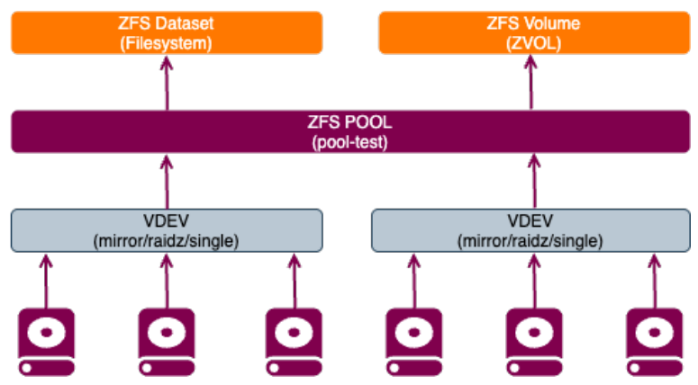
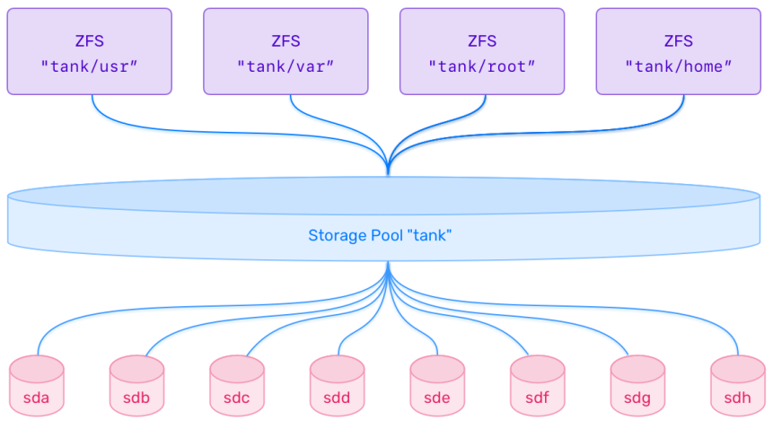

ZFS¶
This chapter covers ZFS architecture, storage pools, datasets, snapshots, cloning, replication, and RAID-style layouts.
In this chapter you will:
- understand the core ZFS architecture and terminology
- create and inspect pools, datasets, and volumes
- tune common properties such as compression, quotas, and mountpoints
- work with snapshots, clones, and send/receive
- review scrubbing, deduplication, and RAID-style pool layouts
7.1 ZFS Overview¶
ZFS combines a filesystem and a volume manager in one stack. Instead of creating partitions, layering LVM, and then formatting a separate filesystem, ZFS manages pooled storage directly and presents datasets or block volumes from that pool.
That is what makes ZFS feel different from more traditional Linux storage workflows. It is especially useful when you want built-in snapshots, copy-on-write behavior, integrity checking, and flexible storage management.
The commands in this section are reference examples meant to support the concepts. The hands-on exercises come later in 7.2.
Here is a quick comparison with more traditional Linux filesystems:
| Feature | ZFS | ext4 / xfs |
|---|---|---|
| Architecture | Volume manager and filesystem together | Filesystem only |
| Snapshots | Native and efficient | Not native |
| Copy-on-write | Yes | No |
| Compression | Built in | Not built in |
| Deduplication | Optional | Not supported |
| Integrity checking | End-to-end checksums | Limited compared with ZFS |
| Overhead | Higher memory and tuning cost | Lower overhead |
| Low-resource suitability | Usually not ideal | Usually better |
There is no single best filesystem for every case. ZFS is strong when integrity, snapshots, and flexible storage management matter more than simplicity.
# Install the ZFS userland tools.
sudo apt install -y zfsutils-linux
Key ZFS features include:
zpoolandzfsadministration commands- native snapshots and writable clones
- copy-on-write data handling
- checksumming and self-healing when redundancy exists
- transparent compression
- optional deduplication
- pooled storage instead of classic partition-based allocation
7.1.1 ZFS Architecture and Components¶

Pools, Datasets, and Volumes¶
ZFS storage is built around three main object types. Once these three make sense, the rest of ZFS becomes much easier to follow:
| Term | Description | Example |
|---|---|---|
| zpool | Storage pool built from one or more devices or VDEVs | pool-test |
| dataset | Mountable ZFS filesystem with its own properties | pool-test/mystuff |
| volume | Block device, also called a zvol |
pool-test/myvolume |
Use a dataset when you want a normal mounted filesystem. Use a volume when you need a raw block device for a VM, container, filesystem, or another block-oriented workload.
Common Dataset Properties¶
| Property | Description | Example |
|---|---|---|
compression |
Enable transparent compression | zfs set compression=lz4 pool/ds |
atime |
Enable or disable access-time updates | zfs set atime=off pool/ds |
mountpoint |
Set the mount path | zfs set mountpoint=/data pool/ds |
recordsize |
Preferred block size | zfs set recordsize=16K pool/ds |
quota |
Limit dataset space usage | zfs set quota=10G pool/ds |
reservation |
Reserve space for a dataset | zfs set reservation=2G pool/ds |
readonly |
Make a dataset read-only | zfs set readonly=on pool/ds |
copies |
Store extra copies of data blocks | zfs set copies=2 pool/ds |
VDEVs and Pool Layouts¶
A VDEV is a virtual device that forms part of a zpool. Each VDEV contains one or more block devices, and ZFS distributes data across the VDEVs in the pool.
Common layouts used in this course:
- single-device pools with no redundancy
- mirrors
raidz,raidz2, andraidz3- striped mirrors, often compared with RAID10
Advanced layouts can also include:
- hot spares
- cache devices (
L2ARC) - log devices (
ZILor separate intent log)
RAIDZ Levels¶
| Level | Redundancy | Minimum disks | Description |
|---|---|---|---|
raidz |
1 disk failure | 3 | Similar to RAID5 |
raidz2 |
2 disk failures | 4 | Similar to RAID6 |
raidz3 |
3 disk failures | 5 | Triple-parity design |
For more detailed tuning guidance, see the OpenZFS workload tuning guide.
Pool Structure¶

ZFS filesystems sit on top of pools called zpools. Those pools are built from one or more VDEVs, and the VDEVs are built from disks, partitions, or files. In production, whole disks are usually the preferred choice because they keep the layout simpler and reduce ambiguity.
# Create a simple striped pool from three devices.
sudo zpool create pool-test /dev/vdb /dev/vdc /dev/vdd
By default, that command creates a non-redundant striped pool.
Note
When managing many disks, prefer stable names such as /dev/disk/by-id/... instead of device names like /dev/vdb.
# Show the health and layout of pool-test.
sudo zpool status pool-test
# Create a dataset inside pool-test.
sudo zfs create pool-test/mystuff
# Show mounted ZFS filesystems.
mount -t zfs
# Create a 10 GiB ZFS volume.
sudo zfs create -V 10G pool-test/myvolume
# Show the zvol device link.
ls -lh /dev/zvol/pool-test/myvolume
Note
A volume is a raw block device. ZFS does not automatically format or mount it.
# Show the block device created for the zvol.
lsblk /dev/zd0
# List all ZFS objects in the pool.
zfs list
# Destroy the test pool.
sudo zpool destroy pool-test
Mirrored Pool Example¶
This next example shows how a pool can be expanded with mirrored VDEVs instead of single disks.
# Create a mirrored pool from two devices.
sudo zpool create mypool mirror /dev/vdc /dev/vdd
# Add a second mirrored VDEV to mypool.
sudo zpool add mypool mirror /dev/vde /dev/vdf -f
# Inspect the mirrored pool layout.
sudo zpool status mypool
This layout is often described as a ZFS equivalent of RAID10: striping across mirrored VDEVs.
File-Based Pool Example¶
File-backed pools are useful for testing and learning, but they are not how you would normally build a production pool.
# Create a 2 GiB backing file for a test pool.
dd if=/dev/zero of="$HOME/example.img" bs=1M count=2048
# Create a pool on the backing file.
sudo zpool create pool-test "$HOME/example.img"
# Show the file-backed pool status.
sudo zpool status pool-test
Warning
File-backed pools depend on the underlying filesystem and are not recommended for production use.
7.1.2 ZFS Scrubbing¶
ZFS scrubbing reads pool data, verifies checksums, and repairs damaged blocks when redundancy exists. Think of it as a preventive integrity check rather than a repair step you wait to run only after something goes wrong.
Scrubbing helps to:
- detect silent corruption or bit rot
- verify checksums across the pool
- repair bad data from redundant copies when possible
# Start a scrub on pool-test.
sudo zpool scrub pool-test
# Show scrub progress and pool status.
sudo zpool status -v pool-test
ZFS also schedules regular maintenance on Ubuntu.
# Show the ZFS maintenance cron jobs.
cat /etc/cron.d/zfsutils-linux
Note
Ubuntu schedules a monthly scrub and TRIM job for ZFS by default.
7.1.3 Configuring and Tuning ZFS¶
A dataset in ZFS is a filesystem or volume created from a pool. Each dataset can have its own properties, which is one of the most useful parts of ZFS for day-to-day administration.
In practice, this means one dataset can be optimized for general file storage, while another can be tuned for backups, VM images, or an application with stricter limits.
# Show all properties for pool-test.
zfs get all pool-test
Dataset Quotas¶
The quota property sets a hard limit on how much space a dataset and its descendants can consume. For a ZFS volume, use volsize instead.
# Limit the dataset to 10 GiB.
sudo zfs set quota=10G pool-test/mystuff
# Verify the quota value.
sudo zfs get quota pool-test/mystuff
Access Time Updates¶
By default, ZFS updates file access time on reads. Disabling atime can reduce extra writes, which is often a sensible choice for busy datasets.
# Disable atime updates for the dataset.
sudo zfs set atime=off pool-test/mystuff
7.1.4 ZFS Compression¶
ZFS can compress data transparently. On modern systems, this is often a net win because reducing the amount of data written or read can matter more than the CPU time spent compressing it.
Supported algorithms commonly used on Ubuntu include:
| Algorithm | Notes |
|---|---|
lz4 |
Fast default choice for general workloads |
zstd |
Good compression ratio for many workloads |
gzip-N |
Tunable but slower |
lzjb |
Older algorithm |
zle |
Useful for data with long zero runs |
# Enable compression on the pool.
sudo zfs set compression=on pool-test
# Check the inherited compression setting.
sudo zfs get compression pool-test/mystuff
# Set zstd compression on the dataset.
sudo zfs set compression=zstd pool-test/mystuff
# Verify the compression algorithm in use.
sudo zfs get compression pool-test/mystuff
# Show the current compression ratio.
sudo zfs get compressratio pool-test/mystuff
Note
lz4 is the default algorithm behind compression=on and is usually the best starting point.
7.1.5 ZFS Snapshots¶
Snapshots are lightweight, read-only point-in-time copies of a dataset or volume. They are inexpensive because ZFS stores only changed blocks after the snapshot is taken.
Common uses include:
- protecting a known-good state before changes
- recovering deleted files
- rolling back after a failed update or test
# Create a recursive snapshot of the dataset.
sudo zfs snapshot -r pool-test/mystuff@snap1
# List all snapshots.
sudo zfs list -t snapshot
Snapshots are exposed through the hidden .zfs/snapshot path, which makes it easy to inspect old content without immediately rolling anything back.
# Browse the contents of the snapshot.
ls /pool-test/mystuff/.zfs/snapshot/snap1
# Remove the current files from the dataset.
sudo rm -rf /pool-test/mystuff/*
# Confirm that the dataset is empty.
ls -lah /pool-test/mystuff/
# Roll the dataset back to snap1.
sudo zfs rollback pool-test/mystuff@snap1
# Confirm that the files returned after rollback.
ls -lah /pool-test/mystuff/
Warning
Rolling back destroys changes made after the snapshot.
# Destroy the snapshot when it is no longer needed.
sudo zfs destroy pool-test/mystuff@snap1
7.1.6 ZFS Clones¶
A clone is a writable copy of a snapshot. It starts from the same data, but it can diverge independently as new writes occur.
Clones are useful for:
- disposable test environments
- rapid VM or container provisioning
- experimenting on a copy of a known-good dataset
# Re-create snap1 for the clone example.
sudo zfs snapshot -r pool-test/mystuff@snap1
# Clone the snapshot into a writable child dataset.
sudo zfs clone pool-test/mystuff@snap1 pool-test/mystuff/snap1clone
# Show the cloned dataset.
sudo zfs list
Note
A snapshot cannot be destroyed while a clone depends on it.
7.1.7 ZFS Send and Receive¶
zfs send turns a snapshot into a stream. zfs receive reconstructs that stream into another dataset. This is one of the most useful ZFS workflows for backups and replication.
Typical uses include:
- local snapshot backups to a file
- remote replication over
ssh - incremental transfers between snapshots
7.1.8 Redundancy Enhancements: Deduplication and Ditto Blocks¶
Deduplication¶
Deduplication stores identical blocks once and reuses them by reference. It can save space, but it comes with a high RAM cost and can hurt performance if the dedup table grows too large.
# Enable deduplication on the dataset.
sudo zfs set dedup=on pool-test/mystuff
Warning
Deduplication is a specialized feature. Test it carefully before enabling it in real environments.
Ditto Blocks¶
ZFS already stores extra metadata copies internally. The copies property increases how many copies of regular data ZFS keeps within the pool.
# Keep two copies of data blocks in the dataset.
sudo zfs set copies=2 pool-test/mystuff
7.1.9 Mounting ZFS Datasets¶
ZFS normally mounts datasets automatically based on the mountpoint property. In most cases, there is no need to edit /etc/fstab, which keeps the workflow simpler than many traditional filesystems.
# Show the configured mountpoint for the dataset.
zfs get mountpoint pool-test/mystuff
# Show mounted ZFS datasets.
mount -t zfs
# Set a custom mountpoint for the dataset.
sudo zfs set mountpoint=/mnt/docs pool-test/mystuff
# Switch the dataset to legacy mount handling.
sudo zfs set mountpoint=legacy pool-test/mystuff
Legacy mode is mainly useful when you intentionally want mounting to be managed outside of ZFS.
7.1.10 ZFS Pool and Dataset Lifecycle¶
ZFS includes tools to inspect, export, import, and destroy pools and datasets. This gives you a fairly clean lifecycle from initial creation through migration to another host and eventual cleanup.
# List the existing pools.
zpool list
# List all datasets and volumes.
zfs list
# Show detailed pool health.
zpool status
# Destroy the clone dataset.
sudo zfs destroy pool-test/mystuff/snap1clone
# Destroy the snapshot named snap1.
sudo zfs destroy pool-test/mystuff@snap1
# Destroy the dataset named mystuff.
sudo zfs destroy pool-test/mystuff
# Export the pool before moving the disks.
sudo zpool export pool-test
# Show pools available for import.
sudo zpool import
# Import pool-test.
sudo zpool import pool-test
# Mount all importable ZFS datasets.
sudo zfs mount -a
Takeaway
The main ZFS mental model is:
- the pool and VDEVs define the storage layout and redundancy
- datasets inherit properties and give you flexible admin boundaries
- snapshots, clones, scrubs, and send/receive are built into the same stack
7.2 ZFS Lab¶
Info
Run this lab on LABVM. These exercises use the extra lab disks and will destroy existing signatures on those devices.
These exercises build on one another. Keep zfspool and /mnt/myzfs in place until 7.2.9 tells you to remove them.
In this lab you will create pools, datasets, snapshots, clones, and RAID-style layouts.
7.2.1 Create ZFS Pools and Datasets¶
Info
This exercise establishes the working pool and datasets used through the rest of 7.2. Success means zfspool exists, both datasets are visible, and zfspool/mystuff is mounted at /mnt/myzfs.
Step 1: Install the ZFS tools.
# Install the ZFS userland package.
sudo apt install -y zfsutils-linux
Expected result
zfsutils-linux is already the newest version (...)
Step 2: Identify the available lab disks and clear existing signatures.
# Show the current block devices.
lsblk
Expected result
NAME MAJ:MIN RM SIZE RO TYPE MOUNTPOINTS
vda 252:0 0 32G 0 disk
vdb 252:16 0 10G 0 disk
vdc 252:32 0 10G 0 disk
vdd 252:48 0 10G 0 disk
vde 252:64 0 10G 0 disk
vdf 252:80 0 10G 0 disk
vdg 252:96 0 10G 0 disk
# Remove old signatures from the lab disks.
for disk in vdb vdc vdd vde vdf vdg; do sudo wipefs -a /dev/$disk; done
Expected result
/dev/vdb: ... bytes were erased at offset ...
/dev/vdc: ... bytes were erased at offset ...
...
Note
If a disk was already blank, that device may show no output from wipefs. The important result is that vdb through vdg are ready for new pool creation.
Note
ZFS usually works with full raw disks. Separate partitions are not required for this lab.
Step 3: Create a mirrored pool.
# Create the initial mirrored pool.
sudo zpool create -f testpool mirror /dev/vdb /dev/vdc
Expected result
No output.
# Show the pool status after creation.
sudo zpool status testpool
Expected result
pool: testpool
state: ONLINE
config:
NAME STATE READ WRITE CKSUM
testpool ONLINE 0 0 0
mirror-0 ONLINE 0 0 0
vdb ONLINE 0 0 0
vdc ONLINE 0 0 0
errors: No known data errors
Step 4: Add a single non-redundant VDEV.
# Add one non-redundant disk to expand capacity.
sudo zpool add -f testpool /dev/vdd
Expected result
No output.
Note
On current ZFS versions, mixing a single-disk VDEV into a mirrored pool requires -f because it lowers the pool's overall redundancy model.
Note
A single-disk VDEV increases capacity, but it also becomes a single point of failure for the pool.
Step 5: Add a second mirrored VDEV.
# Add a second mirrored VDEV to the pool.
sudo zpool add testpool mirror /dev/vde /dev/vdf
Expected result
No output.
Step 6: Review the updated layout.
# Show the full testpool layout after expansion.
sudo zpool status testpool
Expected result
pool: testpool
state: ONLINE
config:
NAME STATE READ WRITE CKSUM
testpool ONLINE 0 0 0
mirror-0 ONLINE 0 0 0
vdb ONLINE 0 0 0
vdc ONLINE 0 0 0
vdd ONLINE 0 0 0
mirror-2 ONLINE 0 0 0
vde ONLINE 0 0 0
vdf ONLINE 0 0 0
errors: No known data errors
Info
The top-level entries under testpool are VDEVs. At this point the pool contains one mirror, one single-disk VDEV, and a second mirror, so the least-redundant VDEV now affects the pool's overall failure model.
Step 7: Destroy the temporary pool.
# Remove the testpool before the next exercise.
sudo zpool destroy testpool
Expected result
No output.
Step 8: Create a RAIDZ pool.
# Create a three-disk RAIDZ pool.
sudo zpool create -f zfspool raidz /dev/vdb /dev/vdc /dev/vdd
Expected result
No output.
Step 9: Verify the new pool.
# Show the status of zfspool.
sudo zpool status zfspool
Expected result
pool: zfspool
state: ONLINE
config:
NAME STATE READ WRITE CKSUM
zfspool ONLINE 0 0 0
raidz1-0 ONLINE 0 0 0
vdb ONLINE 0 0 0
vdc ONLINE 0 0 0
vdd ONLINE 0 0 0
errors: No known data errors
Step 10: Create two datasets.
# Create the first dataset.
sudo zfs create zfspool/mystuff
Expected result
No output.
# Create the second dataset.
sudo zfs create zfspool/myFs2
Expected result
No output.
Step 11: Verify datasets and mountpoints.
# List all datasets in the pool.
sudo zfs list
Expected result
NAME USED AVAIL REFER MOUNTPOINT
zfspool 96K 18.9G 24K /zfspool
zfspool/myFs2 24K 18.9G 24K /zfspool/myFs2
zfspool/mystuff 24K 18.9G 24K /zfspool/mystuff
# Show the currently mounted ZFS datasets.
mount -t zfs
Expected result
zfspool on /zfspool type zfs (...)
zfspool/mystuff on /zfspool/mystuff type zfs (...)
zfspool/myFs2 on /zfspool/myFs2 type zfs (...)
# Show the ZFS-managed mounts.
zfs mount
Expected result
zfspool /zfspool
zfspool/mystuff /zfspool/mystuff
zfspool/myFs2 /zfspool/myFs2
Step 12: Switch one dataset to legacy mounting and mount it manually.
# Create the manual mount directory.
sudo mkdir /mnt/myzfs
Expected result
No output.
# Set mystuff to legacy mount handling.
sudo zfs set mountpoint=legacy zfspool/mystuff
Expected result
No output.
# Mount the dataset manually.
sudo mount -t zfs zfspool/mystuff /mnt/myzfs
Expected result
No output.
Step 13: Confirm the mount state.
# Show ZFS-managed mounts after switching to legacy mode.
zfs mount
Expected result
zfspool /zfspool
zfspool/myFs2 /zfspool/myFs2
zfspool/mystuff /mnt/myzfs
Info
This is the legacy mount demonstration. The dataset is still zfspool/mystuff, but it is now mounted where you told mount to place it instead of where ZFS would normally auto-mount it.
Note
On current Ubuntu/OpenZFS builds, zfs mount may still show a dataset after you switch it to legacy if that dataset is currently mounted. The important change is the mount location.
# Show all mounted ZFS filesystems, including the manual mount.
mount -t zfs
Expected result
zfspool on /zfspool type zfs (...)
zfspool/myFs2 on /zfspool/myFs2 type zfs (...)
zfspool/mystuff on /mnt/myzfs type zfs (...)
Takeaway
In ZFS, pool layout and dataset layout solve different problems:
- the pool defines capacity and redundancy
- datasets define mountpoints, properties, and admin boundaries inside the pool
7.2.2 ZFS Compression¶
Info
Continue using the zfspool/mystuff dataset mounted at /mnt/myzfs. Success means the compression setting is explicit on zfspool and zfspool/mystuff shows a compressratio above 1.00x after writing test data.
Step 1: Review pool properties and the current compression setting.
# Show all ZFS properties for zfspool.
sudo zfs get all zfspool
Expected result
NAME PROPERTY VALUE SOURCE
zfspool type filesystem -
zfspool compression on default
...
# Show the current compression property.
sudo zfs get compression zfspool
Expected result
NAME PROPERTY VALUE SOURCE
zfspool compression on default
Note
On current Ubuntu/OpenZFS builds, compression=on may already be the default. Running zfs set compression=on still makes the setting explicit and changes the source to local.
Step 2: Enable compression.
# Turn on compression for the pool.
sudo zfs set compression=on zfspool
Expected result
No output.
# Verify that compression is enabled.
sudo zfs get compression zfspool
Expected result
NAME PROPERTY VALUE SOURCE
zfspool compression on local
Step 3: Check the compression ratio before writing data.
# Show the current compression ratio.
sudo zfs get compressratio zfspool
Expected result
NAME PROPERTY VALUE SOURCE
zfspool compressratio 1.00x -
Step 4: Write compressible data and recheck the ratio.
# Create a large zero-filled file in the dataset.
sudo dd if=/dev/zero of=/mnt/myzfs/file1 count=1024 bs=1M
Expected result
1024+0 records in
1024+0 records out
1073741824 bytes (1.1 GB, 1.0 GiB) copied, ... s, ... MB/s
# Confirm the test file size.
ls -lh /mnt/myzfs/file1
Expected result
-rw-r--r-- 1 root root 1.0G ... /mnt/myzfs/file1
# Show the new compression ratio on the dataset that received the file.
sudo zfs get compressratio zfspool/mystuff
Expected result
NAME PROPERTY VALUE SOURCE
zfspool/mystuff compressratio 2.00x -
Info
The feature is demonstrated in two places: compression changed from the default setting to a local setting earlier in the lab, and now the dataset that received the zero-filled file shows a compressratio above 1.00x.
Note
Query the dataset that received the file when you want to see the compression effect clearly. The pool root can remain at 1.00x even when a child dataset is compressing data effectively.
Note
Compression ratios usually improve more with repetitive data than with already compressed media such as JPEG or MP3 files.
Takeaway
For ZFS compression, remember:
- it is usually a dataset-level tuning choice
- test it with real data, not just theory
- check the dataset that actually received the writes
7.2.3 ZFS Snapshots and Rollbacks¶
Info
Continue using zfspool/mystuff at /mnt/myzfs. Success means file2 disappears after rollback, snap2 and snap3 are cleaned up at the end of the exercise, and snap1 remains available for the clone exercise.
Step 1: Take a snapshot.
# Create the first recursive snapshot.
sudo zfs snapshot -r zfspool/mystuff@snap1
Expected result
No output.
Step 2: List snapshots.
# Show all snapshots on the system.
sudo zfs list -t snapshot
Expected result
NAME USED AVAIL REFER MOUNTPOINT
zfspool/mystuff@snap1 ... - ... -
Step 3: Create another file.
# Write a second test file after the snapshot.
sudo dd if=/dev/zero of=/mnt/myzfs/file2 count=1024 bs=1M
Expected result
1024+0 records in
1024+0 records out
1073741824 bytes (1.1 GB, 1.0 GiB) copied, ... s, ... MB/s
# List the dataset contents by modification time.
ls -alt /mnt/myzfs/
Expected result
total ...
-rw-r--r-- 1 root root 1073741824 ... file2
-rw-r--r-- 1 root root 1073741824 ... file1
Step 4: Roll back to the snapshot.
# Roll back to snap1.
sudo zfs rollback zfspool/mystuff@snap1
Expected result
No output.
# Confirm that file2 is gone after rollback.
ls -alt /mnt/myzfs/
Expected result
total ...
-rw-r--r-- 1 root root 1073741824 ... file1
Info
This is the rollback proof. file2 existed after snap1, but it disappears here because the live dataset was moved back to the snapshot state.
Step 5: Create additional snapshots and changes.
# Create the second snapshot.
sudo zfs snapshot -r zfspool/mystuff@snap2
Expected result
No output.
# Write a third test file.
sudo dd if=/dev/zero of=/mnt/myzfs/file3 count=1024 bs=1M
Expected result
1024+0 records in
1024+0 records out
1073741824 bytes (1.1 GB, 1.0 GiB) copied, ... s, ... MB/s
# Review the dataset contents before deleting a file.
ls -alt /mnt/myzfs/
Expected result
total ...
-rw-r--r-- 1 root root 1073741824 ... file3
-rw-r--r-- 1 root root 1073741824 ... file1
# Remove file1 before taking snap3.
sudo rm /mnt/myzfs/file1
Expected result
No output.
# Create the third snapshot.
sudo zfs snapshot -r zfspool/mystuff@snap3
Expected result
No output.
# Review the dataset contents after creating snap3.
ls -alt /mnt/myzfs/
Expected result
total ...
-rw-r--r-- 1 root root 1073741824 ... file3
Step 6: Compare snapshot state.
# List the current snapshots again.
sudo zfs list -t snapshot
Expected result
NAME USED AVAIL REFER MOUNTPOINT
zfspool/mystuff@snap1 ... - ... -
zfspool/mystuff@snap2 ... - ... -
zfspool/mystuff@snap3 ... - ... -
# Show differences recorded since snap3.
sudo zfs diff zfspool/mystuff@snap3
Expected result
No output.
Note
If nothing changed after creating snap3, zfs diff returns no output. That still confirms the command worked.
Step 7: Remove the extra snapshots.
# Delete snap2.
sudo zfs destroy zfspool/mystuff@snap2
Expected result
No output.
# Delete snap3.
sudo zfs destroy zfspool/mystuff@snap3
Expected result
No output.
Takeaway
For snapshots and rollback, remember:
- snapshots are cheap read-only restore points
- rollback does not merge changes
- rollback moves the active dataset back to the snapshot state
7.2.4 ZFS Clones and Quotas¶
Info
This exercise shows two independent dataset controls: cloning from a snapshot and limiting growth with a quota. Success means snap1clone appears in zfs list and zfspool/mystuff shows quota=10G with SOURCE=local.
Step 1: Clone the snapshot.
# Create a writable clone from snap1.
sudo zfs clone zfspool/mystuff@snap1 zfspool/mystuff/snap1clone
Expected result
No output.
# Show the cloned dataset.
sudo zfs list
Expected result
NAME USED AVAIL REFER MOUNTPOINT
zfspool ... ... 24K /zfspool
zfspool/mystuff ... ... ... legacy
zfspool/mystuff/snap1clone 0B ... ... legacy
zfspool/myFs2 24K ... 24K /zfspool/myFs2
Info
The clone appears as a new dataset under zfspool/mystuff/.... The snapshot stays read-only; the clone is the writable copy you can change safely.
Note
Snapshot names use @. Dataset and clone names use /.
Step 2: Set and verify a quota.
# Limit the dataset to 10 GiB.
sudo zfs set quota=10G zfspool/mystuff
Expected result
No output.
# Show the quota value.
sudo zfs get quota zfspool/mystuff
Expected result
NAME PROPERTY VALUE SOURCE
zfspool/mystuff quota 10G local
Info
VALUE=10G with SOURCE=local shows the quota is now set directly on this dataset rather than inherited.
Takeaway
This section combined two useful controls:
- a clone is a writable dataset created from a snapshot
- a quota limits how far a dataset can grow
- together, they give you safer testing space without changing the whole pool design
7.2.5 ZFS Send and Receive¶
Info
This section is reference-only. It shows the shape of zfs send and zfs receive commands, but this lab does not provide a separate target system to validate a full replication workflow.
Step 1: Create a snapshot for backup.
# Create snap2 for send/receive.
sudo zfs snapshot -r zfspool/mystuff@snap2
Expected result
No output.
Step 2: Send the snapshot to a file.
# Save the snapshot stream to a file.
sudo zfs send zfspool/mystuff@snap2 > ~/mystuff-snap.zfs
Expected result
No output.
Step 3: Receive the stream into a new dataset.
# Restore the snapshot into a new dataset.
sudo zfs receive -F zfspool/mystuff-copy < ~/mystuff-snap.zfs
Expected result
No output.
Info
Use these commands to understand the workflow. The SSH pipeline below is included as a reference pattern for a real remote target.
# Example remote send over SSH.
sudo zfs send zfspool/mystuff@snap2 | ssh remotehost sudo zfs receive -F zfspool/mystuff-copy
Expected result
No output.
Note
remotehost is a placeholder. Treat this as a reference example of the command shape, not as a practical step to execute unchanged in the lab.
Note
The remote system must have zfsutils-linux installed and a suitable target pool available.
Takeaway
zfs send and zfs receive are useful because:
- they work from snapshots
- the transfer is based on a consistent point in time
- they fit backup, migration, and replication workflows well
7.2.6 ZFS Ditto Blocks¶
Info
This exercise focuses on the dataset property itself. Success means zfspool/mystuff shows copies=3 with SOURCE=local.
Step 1: Increase the number of stored copies.
# Store three copies of data blocks in the dataset.
sudo zfs set copies=3 zfspool/mystuff
Expected result
No output.
Step 2: Verify the setting.
# Show the copies property.
sudo zfs get copies zfspool/mystuff
Expected result
NAME PROPERTY VALUE SOURCE
zfspool/mystuff copies 3 local
Info
The goal here is to confirm the property change itself. The lab does not try to force a failure to prove the extra block copies on disk.
Takeaway
The copies property means:
- extra block copies inside the dataset itself
- better local resilience for that dataset
- not a replacement for mirrored or RAIDZ pool redundancy
7.2.7 ZFS Deduplication¶
Info
This exercise is only about enabling and verifying the property. Success means zfspool/mystuff shows dedup=on with SOURCE=local.
Step 1: Enable deduplication.
# Turn on deduplication for the dataset.
sudo zfs set dedup=on zfspool/mystuff
Expected result
No output.
Step 2: Verify the setting.
# Show the dedup property.
sudo zfs get dedup zfspool/mystuff
Expected result
NAME PROPERTY VALUE SOURCE
zfspool/mystuff dedup on local
Info
The goal here is to verify that deduplication was enabled. It does not try to measure real space savings in a short lab run.
Takeaway
Deduplication should be treated as a special-case feature:
- it can save space
- it can cost a lot of RAM and performance
- only enable it when you have a clear reason
7.2.8 ZFS Scrubbing and Fault Simulation¶
Info
This exercise demonstrates the recovery workflow on a degraded pool. Success means zfspool becomes degraded after the device is offlined, then shows replacement and resilver activity after zpool replace.
Step 1: Write test data into the pool.
# Write random data into the pool.
sudo dd if=/dev/urandom of=/zfspool/random.dat bs=1M count=20
Expected result
20+0 records in
20+0 records out
20971520 bytes (21 MB, 20 MiB) copied, ... s, ... MB/s
# Calculate the checksum of the test file.
md5sum /zfspool/random.dat
Expected result
e2fc714c4727ee9395f324cd2e7f331f /zfspool/random.dat
Step 2: Simulate disk damage.
# Take /dev/vdd offline to simulate a failed device.
sudo zpool offline zfspool /dev/vdd
Expected result
No output.
Note
Offlining the device gives you a predictable degraded-pool state to observe immediately. It is a safer and more reliable lab path than trying to corrupt on-disk labels and hoping the active pool notices right away.
Step 3: Review the pool state.
# Show the degraded or unavailable device state.
sudo zpool status zfspool
Expected result
pool: zfspool
state: DEGRADED
status: One or more devices has been taken offline by the administrator.
Step 4: Start a scrub.
# Start a scrub on zfspool.
sudo zpool scrub zfspool
Expected result
No output.
Step 5: Check scrub progress.
# Show detailed scrub progress.
sudo zpool status -v zfspool
Expected result
pool: zfspool
state: DEGRADED
scan: scrub repaired 0B in 00:00:00 with 0 errors on ...
Note
You can stop or pause a scrub with zpool scrub -s or zpool scrub -p.
Step 6: Replace the failed disk.
# Replace the damaged device with /dev/vdg.
sudo zpool replace zfspool /dev/vdd /dev/vdg -f
Expected result
No output.
# Confirm that the replacement is in progress or complete.
sudo zpool status -v zfspool
Expected result
pool: zfspool
state: ONLINE
scan: resilvered ...
Info
The key result is the workflow, not just the final ONLINE state: the pool went degraded, you inspected it, replaced the failed device, and then watched ZFS resilver the data.
Takeaway
The core recovery flow is:
- detect the problem
- inspect pool health
- replace or reattach the device
- confirm the resilver with
zpool status
7.2.9 Destroy a ZFS Pool¶
Info
This is the cleanup exercise for 7.2. Success means zfspool and its child objects are gone, leaving the extra lab disks ready for the RAID exercises in 7.3.
Step 1: Review all ZFS object types.
# List ZFS filesystems.
sudo zfs list -t filesystem
Expected result
NAME USED AVAIL REFER MOUNTPOINT
zfspool ... ... 24K /zfspool
zfspool/mystuff ... ... ... legacy
zfspool/mystuff/snap1clone ... ... ... legacy
zfspool/mystuff-copy ... ... ... /zfspool/mystuff-copy
Info
This review step should still show the objects you created earlier in the lab, including the clone and the send/receive target, before you remove them during cleanup.
# List ZFS snapshots.
sudo zfs list -t snapshot
Expected result
NAME USED AVAIL REFER MOUNTPOINT
zfspool/mystuff@snap1 ... - ... -
zfspool/mystuff@snap2 ... - ... -
# List ZFS volumes.
sudo zfs list -t volume
Expected result
no datasets available
# List all ZFS object types.
sudo zfs list -t all
Expected result
NAME USED AVAIL REFER MOUNTPOINT
zfspool ... ... 24K /zfspool
...
Step 2: Destroy datasets, snapshots, and volumes inside the pool.
# Destroy the entire dataset tree recursively.
sudo zfs destroy -r zfspool
Expected result
No output.
Step 3: Destroy the pool itself.
# Remove the zfspool storage pool.
sudo zpool destroy zfspool
Expected result
No output.
Takeaway
ZFS cleanup is layered too:
- remove datasets, snapshots, and clones first when needed
- destroy the pool itself last
7.3 ZFS RAID Lab¶
Info
Run this lab on LABVM. Each exercise creates its own pool and destroys it before the next exercise reuses the same disks.
Note
If a pool creation step fails because a disk still has old labels, rerun the wipe loop from 7.2.1 Step 2 before trying again.
7.3.1 RAIDZ Exercises¶
Info
This exercise compares raidz and raidz2. Success means you can identify raidz1-0 versus raidz2-0 in zpool status and relate the extra parity in raidz2 to reduced usable capacity.
Step 1: Create a RAIDZ pool.
# Create a RAIDZ pool across four disks.
sudo zpool create -f zfsraid5 raidz /dev/vdb /dev/vdc /dev/vdd /dev/vde
Expected result
No output.
Step 2: Inspect the pool.
# Show the RAIDZ pool status.
sudo zpool status zfsraid5
Expected result
pool: zfsraid5
state: ONLINE
config:
NAME STATE READ WRITE CKSUM
zfsraid5 ONLINE 0 0 0
raidz1-0 ONLINE 0 0 0
vdb ONLINE 0 0 0
vdc ONLINE 0 0 0
vdd ONLINE 0 0 0
vde ONLINE 0 0 0
# Show the dataset view of the pool.
zfs list
Expected result
NAME USED AVAIL REFER MOUNTPOINT
zfsraid5 24K 28.5G 24K /zfsraid5
Step 3: Destroy the RAIDZ pool so the disks can be reused.
# Remove the RAIDZ pool before creating the RAIDZ2 example.
sudo zpool destroy zfsraid5
Expected result
No output.
Note
These examples reuse the same lab disks. Destroy the first pool before creating the next one.
Step 4: Create a RAIDZ2 pool.
# Create a RAIDZ2 pool across five disks.
sudo zpool create -f zfsraid6 raidz2 /dev/vdb /dev/vdc /dev/vdd /dev/vde /dev/vdf
Expected result
No output.
Step 5: Inspect the RAIDZ2 pool.
# Show the RAIDZ2 pool status.
sudo zpool status zfsraid6
Expected result
pool: zfsraid6
state: ONLINE
config:
NAME STATE READ WRITE CKSUM
zfsraid6 ONLINE 0 0 0
raidz2-0 ONLINE 0 0 0
vdb ONLINE 0 0 0
vdc ONLINE 0 0 0
vdd ONLINE 0 0 0
vde ONLINE 0 0 0
vdf ONLINE 0 0 0
# Show the dataset view of the RAIDZ2 pool.
zfs list
Expected result
NAME USED AVAIL REFER MOUNTPOINT
zfsraid6 24K 27.6G 24K /zfsraid6
Info
Compare this with the earlier raidz1 example. The important difference is the raidz2-0 layout in zpool status, which shows double parity in exchange for less usable capacity.
Step 6: Review the RAIDZ2 pool and then clean it up.
# Review the RAIDZ2 pool before cleanup.
sudo zpool status zfsraid6
Expected result
pool: zfsraid6
state: ONLINE
# Destroy the RAIDZ2 pool.
sudo zpool destroy zfsraid6
Expected result
No output.
Takeaway
For raidz layouts, remember:
- more parity means better failure tolerance
- more parity also means less usable space for data
7.3.2 Nested RAIDZ1¶
Info
This exercise shows how a pool can stripe across multiple RAIDZ VDEVs. Success means zpool status shows two top-level raidz1-* VDEVs inside zfsraid60.
Step 1: Create the first RAIDZ VDEV.
# Create a pool with the first RAIDZ VDEV.
sudo zpool create zfsraid60 raidz /dev/vdb /dev/vdc /dev/vdd -f
Expected result
No output.
Step 2: Add a second RAIDZ VDEV.
# Add the second RAIDZ VDEV to the pool.
sudo zpool add zfsraid60 raidz /dev/vde /dev/vdf /dev/vdg
Expected result
No output.
Note
This creates a striped layout across two RAIDZ VDEVs, commonly compared with RAID60.
Step 3: Inspect the layout.
# Show the nested RAIDZ layout.
sudo zpool status zfsraid60
Expected result
pool: zfsraid60
state: ONLINE
config:
NAME STATE READ WRITE CKSUM
zfsraid60 ONLINE 0 0 0
raidz1-0 ONLINE 0 0 0
vdb ONLINE 0 0 0
vdc ONLINE 0 0 0
vdd ONLINE 0 0 0
raidz1-1 ONLINE 0 0 0
vde ONLINE 0 0 0
vdf ONLINE 0 0 0
vdg ONLINE 0 0 0
# Show the dataset view of the pool.
zfs list
Expected result
NAME USED AVAIL REFER MOUNTPOINT
zfsraid60 24K 36.7G 24K /zfsraid60
Info
The feature here is the two top-level raidz1-* VDEVs shown in zpool status. ZFS stripes across those VDEVs, which is why this is compared with RAID60-style layouts.
Step 4: Destroy the pool.
# Remove the nested RAIDZ pool.
sudo zpool destroy zfsraid60
Expected result
No output.
Takeaway
A pool can stripe across multiple top-level VDEVs:
- that improves scale
- each top-level VDEV still affects the pool's failure model
- layout choices matter early
7.3.3 RAID10 Equivalent¶
Info
This exercise demonstrates striped mirrors and a mirror repair workflow. Success means zpool status shows two mirror-* VDEVs, the pool survives the simulated disk damage, and the replacement step starts or completes a resilver.
Step 1: Create striped mirrors.
# Create a pool from two mirrored VDEVs.
sudo zpool create zfsraid10 mirror /dev/vdb /dev/vdc mirror /dev/vdd /dev/vde -f
Expected result
No output.
Step 2: Inspect the mirrored layout.
# Show the RAID10-style pool status.
sudo zpool status zfsraid10
Expected result
pool: zfsraid10
state: ONLINE
config:
NAME STATE READ WRITE CKSUM
zfsraid10 ONLINE 0 0 0
mirror-0 ONLINE 0 0 0
vdb ONLINE 0 0 0
vdc ONLINE 0 0 0
mirror-1 ONLINE 0 0 0
vdd ONLINE 0 0 0
vde ONLINE 0 0 0
# Show the dataset view of the mirrored pool.
zfs list
Expected result
NAME USED AVAIL REFER MOUNTPOINT
zfsraid10 24K 18.4G 24K /zfsraid10
Info
The important part is the two mirror-* VDEVs in zpool status. That striped-mirror layout is why this pool is compared with RAID10.
Step 3: Write test data into the pool.
# Write random data into the mirrored pool.
sudo dd if=/dev/urandom of=/zfsraid10/random.dat bs=1M count=20
Expected result
20+0 records in
20+0 records out
20971520 bytes (21 MB, 20 MiB) copied, ... s, ... MB/s
Step 4: Simulate disk damage.
# Overwrite the beginning of /dev/vde.
sudo dd if=/dev/zero of=/dev/vde bs=1M count=10
Expected result
10+0 records in
10+0 records out
10485760 bytes (10 MB, 10 MiB) copied, ... s, ... MB/s
Step 5: Start a scrub.
# Start a scrub on the mirrored pool.
sudo zpool scrub zfsraid10
Expected result
No output.
Step 6: Review the scrub status.
# Show detailed status for zfsraid10.
sudo zpool status -v zfsraid10
Expected result
pool: zfsraid10
state: ONLINE
status: One or more devices has experienced an unrecoverable error. An
attempt was made to correct the error. Applications are unaffected.
scan: scrub repaired ... with 0 errors on ...
Note
On current Ubuntu/OpenZFS builds, this test can remain ONLINE after scrub if ZFS repairs the damaged blocks from the mirror immediately. The important signal is that the affected device shows checksum errors and the pool reports the repair activity.
Step 7: Replace the failed device.
# Replace /dev/vde with /dev/vdg.
sudo zpool replace zfsraid10 /dev/vde /dev/vdg -f
Expected result
No output.
# Confirm the pool recovered after replacement.
sudo zpool status -v zfsraid10
Expected result
pool: zfsraid10
state: ONLINE
scan: resilvered ...
Step 8: Destroy the pool.
# Remove the mirrored test pool.
sudo zpool destroy zfsraid10
Expected result
No output.
Takeaway
Mirrored VDEVs are common because:
- they are easy to reason about
- they are easy to repair
- they are the usual ZFS way to build a RAID10-style layout
7.3.4 File-Based Pool¶
Info
This exercise is only for testing and demonstration. Success means you create a pool backed by a regular file, confirm its mountpoint, and then remove both the pool and the backing file.
Step 1: Create a file to back the test pool.
# Create a 2 GiB file for a file-backed pool.
dd if=/dev/zero of="$HOME/zfsraidpool.img" bs=1M count=2048
Expected result
2048+0 records in
2048+0 records out
2147483648 bytes (2.1 GB, 2.0 GiB) copied, ... s, ... MB/s
# Create a pool on the file.
sudo zpool create zfsraidpool "$HOME/zfsraidpool.img"
Expected result
No output.
Step 2: Review the pool and its mountpoint.
# Show the file-backed pool status.
sudo zpool status zfsraidpool
Expected result
pool: zfsraidpool
state: ONLINE
config:
NAME STATE READ WRITE CKSUM
zfsraidpool ONLINE 0 0 0
/home/ubuntu/zfsraidpool.img ONLINE 0 0 0
# Show the mountpoint property.
sudo zfs get mountpoint zfsraidpool
Expected result
NAME PROPERTY VALUE SOURCE
zfsraidpool mountpoint /zfsraidpool default
# Show the dataset view of the file-backed pool.
zfs list
Expected result
NAME USED AVAIL REFER MOUNTPOINT
zfsraidpool 24K 1.88G 24K /zfsraidpool
Step 3: Destroy the pool.
# Remove the file-backed test pool.
sudo zpool destroy zfsraidpool
Expected result
No output.
Step 4: Remove the backing file.
# Delete the file that backed the test pool.
rm -f "$HOME/zfsraidpool.img"
Expected result
No output.
Takeaway
File-backed pools are mainly for labs because:
- they are useful for learning and quick testing
- they add another filesystem layer underneath ZFS
- they are not a normal production design
7.3.5 Cache and ZIL Devices¶
Info
This exercise is about recognizing special device classes in the pool layout. Success means zpool status shows separate cache and logs sections, and the later status output shows that the cache device was removed cleanly.
Step 1: Create a mirrored pool.
# Create a mirrored pool for cache and log testing.
sudo zpool create zfsmirror mirror /dev/vdd /dev/vde -f
Expected result
No output.
Step 2: Inspect the initial pool.
# Show the pool status before adding special devices.
sudo zpool status zfsmirror
Expected result
pool: zfsmirror
state: ONLINE
config:
NAME STATE READ WRITE CKSUM
zfsmirror ONLINE 0 0 0
mirror-0 ONLINE 0 0 0
vdd ONLINE 0 0 0
vde ONLINE 0 0 0
Step 3: Add a cache device.
# Add /dev/vdc as a cache device.
sudo zpool add zfsmirror cache /dev/vdc
Expected result
No output.
Step 4: Add a log device.
# Add /dev/vdf as a log device.
sudo zpool add zfsmirror log /dev/vdf
Expected result
No output.
Step 5: Review the updated pool.
# Show the pool after adding cache and log devices.
sudo zpool status zfsmirror
Expected result
pool: zfsmirror
state: ONLINE
config:
NAME STATE READ WRITE CKSUM
zfsmirror ONLINE 0 0 0
mirror-0 ONLINE 0 0 0
vdd ONLINE 0 0 0
vde ONLINE 0 0 0
logs
vdf ONLINE 0 0 0
cache
vdc ONLINE 0 0 0
Info
This exercise is mainly about recognizing the extra device classes in zpool status. Look for the separate logs and cache sections rather than expecting a visible performance difference in a short lab run.
Note
The order of logs and cache sections in zpool status can vary by OpenZFS version. Either order is fine as long as both device classes are present.
Step 6: Remove the cache device.
# Remove the cache device from the pool.
sudo zpool remove zfsmirror vdc
Expected result
No output.
Step 7: Review the pool again.
# Show the pool after removing the cache device.
sudo zpool status zfsmirror
Expected result
pool: zfsmirror
state: ONLINE
config:
NAME STATE READ WRITE CKSUM
zfsmirror ONLINE 0 0 0
mirror-0 ONLINE 0 0 0
vdd ONLINE 0 0 0
vde ONLINE 0 0 0
logs
vdf ONLINE 0 0 0
Step 8: Destroy the pool.
# Remove the cache and log test pool.
sudo zpool destroy zfsmirror
Expected result
No output.
Takeaway
cache and log devices are specialized tuning tools:
cachemainly helps repeated readslogmainly helps synchronous writes- neither replaces a solid base pool layout and enough RAM